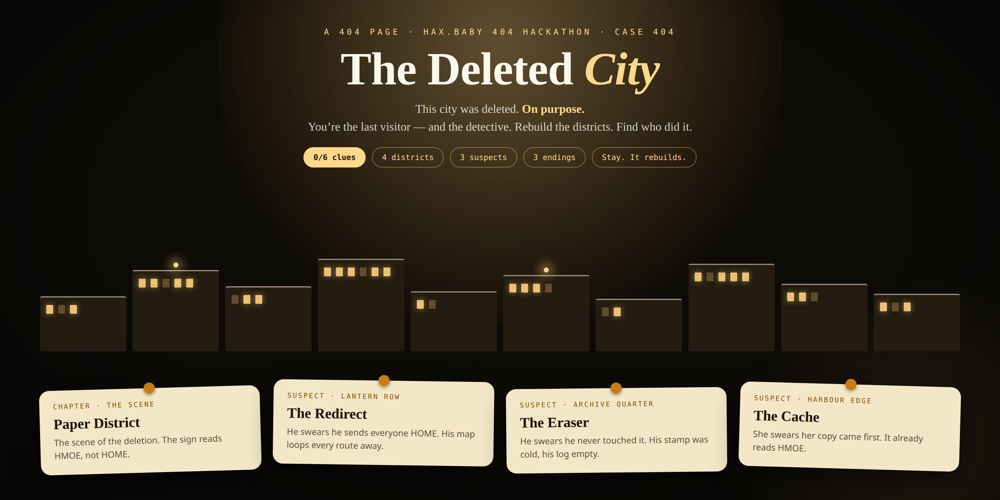
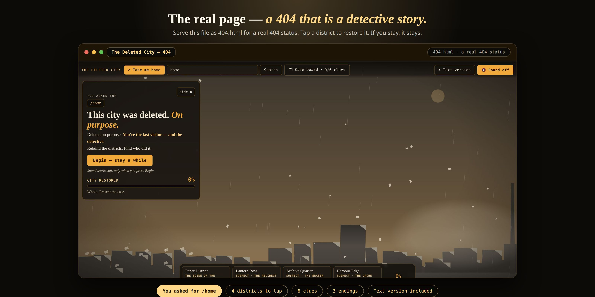
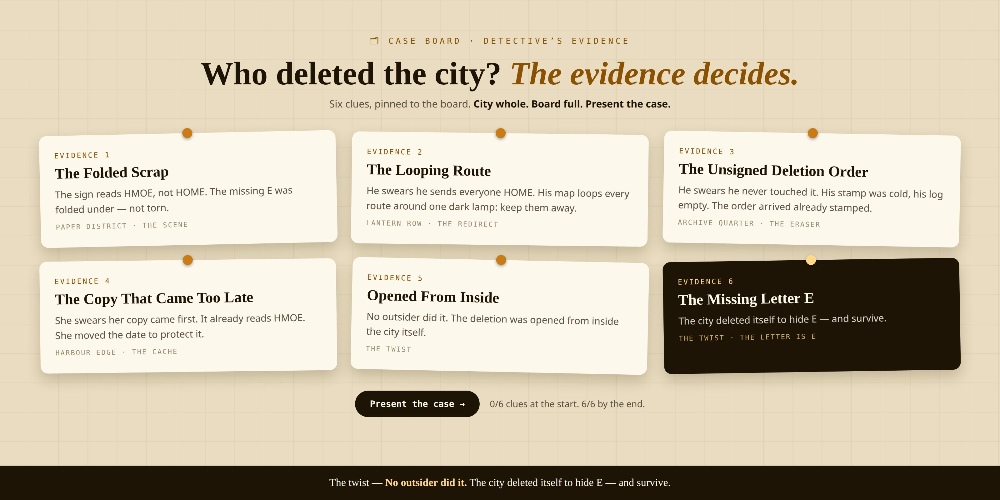
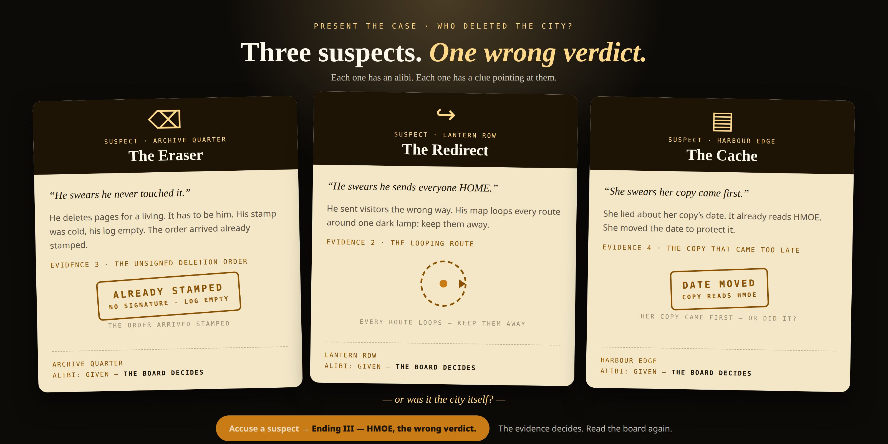
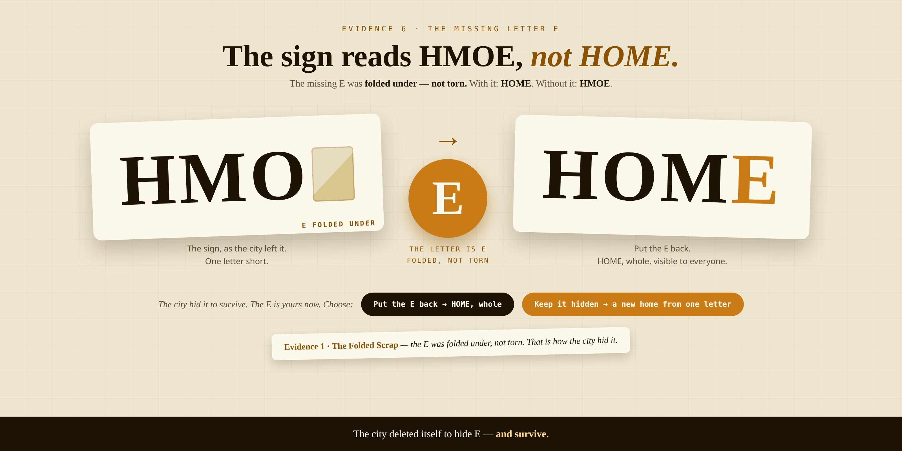
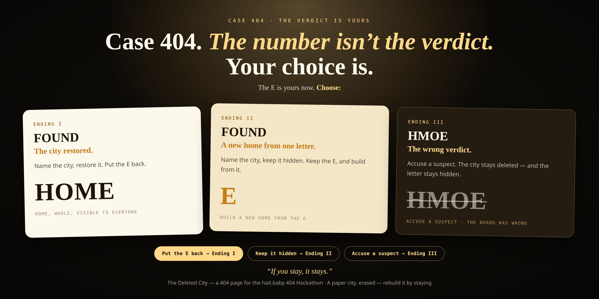
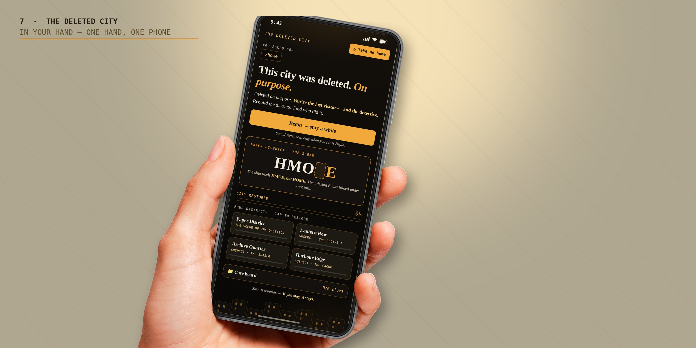

The Deleted City
A 404 page that is a detective story. The city deleted itself to hide the missing letter E — you’re the last visitor, and the detective. Rebuild the districts, find the clues, and choose the ending.
Who this is for: the haX.baby 404 Hackathon — and any site that wants a 404 page people remember instead of leave from.

A 404 page is a dead end. This one keeps the visitor.
A visitor lands on a missing page and gets a blank error. They leave. The Deleted City turns that dead end into a detective story — the city deleted itself, and the visitor is the detective who rebuilds it.
Three steps
Arrive at the city
You land on a missing page. The city is deleted, the sign reads HMOE, and you’re the last visitor.
Rebuild the districts
Tap the four districts — Paper, Lantern Row, Archive Quarter, Harbour Edge. Stay, and the city rebuilds itself.
Present the case
Six clues on the board. Name who deleted the city, then choose the ending — 404 flips to FOUND, or stays HMOE.
Built to be played
The 404 comes last
The number only appears when you present the case. The opening is just the lost city — no big error up front.
Every suspect has an alibi
Three suspects, three alibis, three clues. Accuse one and you get Ending III — HMOE, the wrong verdict.
The city rebuilds while you stay
Visiting a district restores it. Stay long enough and the city comes back on its own — if you stay, it stays.
A dead link became a story with three endings.
Built for the haX.baby 404 Hackathon. The page is a single file — serve it as 404.html for a real 404 status.
Screens

The case, in pictures
The whole story, picture by picture — the city, the case board, the suspects, the missing letter, the real page, the endings, and the phone in one hand.





Want something like this?
Tell me about your project. I reply within one working day.